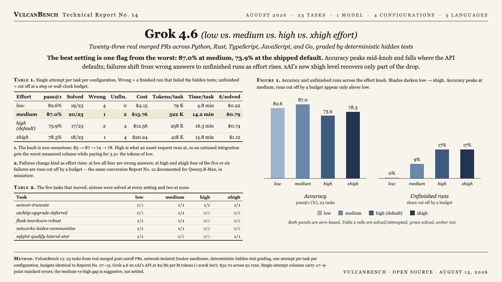

The best setting is one flag away from the worst: 87.0% pass@1 at medium, 73.9% at high — and high is what an unset request runs at. The curve is non-monotone (82.6 → 87.0 → 73.9 → 78.3): the new xhigh level, introduced with 4.6, recovers less than half the drop from the medium peak. As effort rises, failures change kind — at low all four are finished-but-wrong; at high and xhigh, four at each level are runs cut off by a budget, the conversion Report No. 12 documented for Qwen3.8-Max. On this suite Grok 4.6 does not clear its predecessor: Report No. 07 measured Grok 4.5 at 91.3% under the same single-attempt protocol.

| Effort | pass@1 | Solved | Wrong | Unfinished | Cost | Tokens/task | Time/task | $/solved |
|---|---|---|---|---|---|---|---|---|
| low | 82.6% | 19/23 | 4 | 0 | $4.15 | 79 K | 4.8 min | $0.22 |
| medium | 87.0% | 20/23 | 1 | 2 | $15.76 | 322 K | 14.2 min | $0.79 |
| high (default) | 73.9% | 17/23 | 2 | 4 | $12.56 | 258 K | 16.3 min | $0.74 |
| xhigh | 78.3% | 18/23 | 1 | 4 | $20.24 | 418 K | 15.8 min | $1.12 |
One attempt per task per configuration, network-isolated Docker sandboxes, deterministic hidden-test grading. Wrong = a finished run that failed the hidden tests; unfinished = cut off at a step or wall-clock budget (one low run hit a budget and its partial diff still passed; it counts as solved). Grok 4.6 priced at $2/$6 per million input/output tokens, <200K-input tier. xAI’s documented effort enum is low/medium/high/xhigh; high is the default when the field is unset, and reasoning cannot be disabled.
The shipped default is the worst measured setting. An unset request runs at high: 73.9%, thirteen points under medium, at 3.3× the token volume of low and 16.3 minutes per task. One request flag — reasoning_effort: "medium" — moves an integration from the worst column to the best.
The knob is non-monotone, and the new top level does not fix it. Accuracy rises from low to medium, falls eleven points at high, and recovers only four at xhigh. Reasoning volume rises the whole way — median tokens per run climb 31K → 111K → 166K → 249K — so the extra deliberation past medium buys negative returns.
Effort converts wrong answers into unfinished runs. Wrong answers fall 4 → 1 → 2 → 1 while budget-cut runs climb 0 → 2 → 4 → 4. The pattern matches Report No. 12’s Qwen3.8-Max result in miniature: past its sweet spot the model does not get sloppier, it stops finishing.
The regression sits in solvable work. Sixteen tasks are solved at every setting, and the two never solved — pennylane-trotter-fragmented and sqlglot-canonicalize-internal-names — are the same pair every model in Reports No. 12 and 13 also fails. Of the five tasks that move, three are solved at low or medium and lost at high and xhigh.
It does not clear Grok 4.5, and the margin of this report is wide. Report No. 07 measured 4.5 at 91.3% (21/23) at medium and high under the same single-attempt protocol; 4.6’s best column is 87.0%. Single-attempt standard errors are ±7–9 points and the medium-vs-high gap is roughly 1.1× the pair’s combined uncertainty — suggestive, not settled. A three-attempt top-up of medium and high is queued.
| Task | low | medium | high | xhigh |
|---|---|---|---|---|
| semver-truncate | 0/1 | 1/1 | 1/1 | 1/1 |
| aiohttp-upgrade-deferred | 0/1 | 1/1 | 0/1 | 0/1 |
| flask-teardown-robust | 1/1 | 1/1 | 0/1 | 0/1 |
| networkx-leiden-communities | 1/1 | 1/1 | 0/1 | 0/1 |
| sqlglot-qualify-lateral-star | 1/1 | 0/1 | 0/1 | 1/1 |
Cells are solved/attempted. Sixteen tasks were solved at all four settings; never solved at any: pennylane-trotter-fragmented and sqlglot-canonicalize-internal-names. With one attempt per cell, individual flips can be run-to-run variance; the aggregate shape, not any single cell, is the result.
VulcanBench v3: 23 tasks from real merged post-cutoff PRs (Python 9, TypeScript 4, Rust 4, Go 3, JavaScript 3), network-isolated Docker sandboxes, deterministic hidden-test grading, one attempt per task per configuration, and the suite’s fixed step, time, and cost budgets, unchanged since Report No. 07. Model judges were disabled for scoring. Runs executed 2026-08-12 against xAI’s production API. Caveats: single-attempt columns carry ±7–9-point standard errors — wider than the three-attempt columns of Reports No. 12 and 13 — so per-task flips can be variance rather than stable behavior; the comparison to Grok 4.5 spans reports run six weeks apart; and requests above 200K input tokens bill at double rate, which per-run receipts do not expose, so costs are lower bounds on the largest repositories. Runtime includes provider latency.
{kind=link}